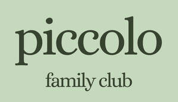

Trade Mark Journal No.2025/045 7 November 2025
UK00004283739 25 October 2025 (41)
Mark 1
piccolo family club
Mark 2

- Class 41
- Education; Pre-school education; Education and training; Provision of facilities for education; Education in movement awareness; Organization of competitions for education or entertainment; Education services relating to sports; Education services relating to conservation of the environment; Education and training in the field of business management; Educational and training services relating to healthcare; Education services relating to food technology; Foreign language education services; Ballet classes; Linguistic classes; Gym activity classes; Exercise classes; Teaching at elementary schools; Singing classes; Conducting of classes; Provision of dance classes; Arranging of classes; Conducting fitness classes; Exercise and fitness classes; Conducting classes in exercise; Conducting classes in weight control; Conducting classes in nutrition; Production of course material distributed at vocational lectures; Academic mentoring of school age children; Organisation of examinations to grade level of achievement; Conducting distance learning instruction at the primary level; Production of course material distributed at professional lectures; Conducting distance learning instruction at the secondary level; Production of course material distributed at vocational courses; Arranging and conducting of day school courses for adults; Conducting physical fitness conditioning classes; Production of course material distributed at professional courses; School services for the teaching of languages; Production of course material distributed at vocational seminars; Production of course material distributed at management lectures; Educational services provided by senior high schools; Production of course material distributed at professional seminars; Ballet schools; Pilates instruction; School services for the teaching of art; Production of course material distributed at management courses; Teaching by correspondence courses; School services for the teaching of construction draughting; Instruction in group exercise; Pre-school teaching; Production of course material distributed at management seminars; Obedience school training for animals; Ballet lessons; Arranging and conducting of classes; Dance schools; School services; Movement tuition for pre-school children; Dance instruction for adults; Tuition in gymnastics; Teaching in the field of remedial reading; Music tuition by correspondence courses; Producing and conducting exercises for music classes and programmes; Rental of equipment for use at gymnastic events; Correspondence school services; Secondary school educational services; Aerobics competitions; Training of swimming teachers; Remedial tuition in speech; Education academy services for teaching languages; Pregnancy gymnastics instruction; Conducting of instructional, educational and training courses for young people and adults; Karate instruction; Teaching academy services; Presentation of live performances by a musical group; Remedial tuition; Instruction in ballet; Entertainment; Theatre entertainment; Television entertainment; Musical entertainment; Interactive entertainment; Entertainment services; Education, entertainment and sports; Sports entertainment services; Musical entertainment services; Live entertainment; Interactive entertainment services; Entertainment information; Booking of entertainment; Entertainment services in the nature of arranging social entertainment events; Live entertainment services; Popular entertainment services; Provision of musical entertainment; Education, entertainment and sport services; Provision of entertainment; Animated musical entertainment services; Organising of entertainment; Entertainment services for children; Entertainment, sporting and cultural activities; Organisation of musical entertainment; Live entertainment production services; Children's entertainment services; Musical group entertainment services; Provision of live entertainment; Rental of entertainment halls; Holiday centre entertainment services; Entertainment services in the nature of sporting events; Arranging of entertainment shows; Services providing entertainment in the form of live musical performances; Cultural activities; Cultural services; Sporting and cultural activities; Cultural and sporting activities; Organizing cultural and arts events; Organisation of cultural events; Organisation of entertainment and cultural events; Conducting of cultural events; Providing cultural activities; Arranging of cultural events; Organization of exhibitions for cultural or educational purposes; Exhibitions (Organization of -) for cultural or educational purposes; Organization of exhibitions for cultural and educational purposes; Organisation of exhibitions for cultural and educational purposes; Organisation of exhibitions for cultural or educational purposes; Organizing community sporting and cultural events; Organising community cultural events; Organization of cultural shows; Workshops for cultural purposes; Arranging of festivals for cultural purposes; Arranging of exhibitions for cultural or educational purposes; Organisation of events for cultural, entertainment and sporting purposes; Organization of events for cultural purposes; Conducting of cultural activities; Organisation of animal exhibitions for cultural or educational purposes; Organising events for cultural purposes; Fetes (Organisation of -) for cultural purposes; Arranging of exhibitions for cultural purposes; Exhibitions (Arranging -) for cultural purposes; Organization of shows for cultural purposes; Administration [organisation] of cultural activities; Exhibitions (Conducting -) for cultural purposes; Ticket reservation for cultural events; Provision of visitor attractions for cultural purposes; Entertainment in the nature of ethnic festival; Organisation and holding of fairs for cultural or educational purposes; Information relating to cultural activities; Arranging of demonstrations for cultural purposes; Arranging of displays for cultural purposes; Organisation of cultural activities for summer camps; Cultural, educational or entertainment services provided by art galleries; Arranging of presentations for cultural purposes; Educational services for the dramatic arts; Arranging and conducting of cultural activities; Providing information about cultural activities; Entertainment services in the nature of organizing social entertainment events; Ticket reservation and booking services for cultural events; Festivals (Organisation of -) for educational purposes; Organisation of musical events; Arranging of visual and musical entertainment; Organisation of educational events; Artistic management of theatre shows; Technological education services; Musical education services; Linguistic education and training services; Festivals (Organisation of -) for recreational purposes; Lingual education; Sporting and recreational activities; Educational services relating to the teaching of foreign languages; Educational services relating to the conservation of nature.
Piccolo Family Club Ltd